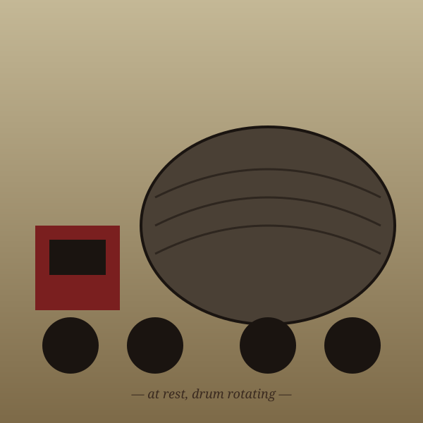

Entry · Monday, April 27, 2026

Plate V. — At rest. Engine idle. Drum rotating.
Concrete Mixer
/ˈkɒŋ.kriːt ˈmɪk.sər/ n.- 1. An industrial vehicle of contemplative rotundity, characterized by a single, slowly-rotating, drum-shaped midsection.
- 2. The platonic ideal of thicccness: all body, no apologies.
In a sentence —
"She stopped traffic. Eight cubic yards of slow-spinning confidence."
Etymology —
From concrete (Latin concretus, "grown together") + mixer. The drum's rotation is, for our purposes, decorative.